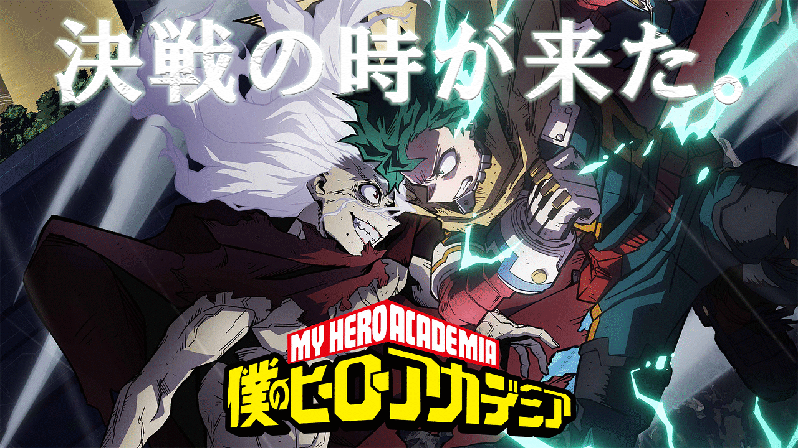

<!DOCTYPE html>
<html lang="ja">
<head>
    <meta charset="UTF-8">
    <meta name="viewport" content="width=device-width, initial-scale=1.0">
    <link rel="icon" href="hiroakarogo.png" type="image/png">
    <title>僕のヒーローアカデミア</title>
<style>
    body {
        background: #c3c5c7;
        height: 1500px;
        display: flex;
        flex-direction: column;
        align-items: center;
        justify-content: center;
        margin: 0;
        overflow-x: hidden;
    }

    .header {
        position: fixed;
        top: 0;
        left: 0;
        width: 100%;
        height: 140px;
        background: rgba(0, 0, 0, .8);
        transition: height 0.3s;
        z-index: 10;
    }

    .header .wrap {
        margin: 0 auto;
        width: 90%;
        max-width: 69em;
    }

    .header h1,
    .header .menu {
        display: inline-block;
        position: relative;
    }

    .header h1,
    .header .menu a {
        line-height: 140px;
        color: #808080;
        text-decoration: none;
    }

    .header .menu a:hover {
        color: #ff0000;
        transition: color 0.3s ease;
    }

    .header h1 {
        float: left;
        margin: 0;
        color: #ffffff;
        font-size: 72px;
        text-transform: uppercase;
    }

    .header h1 a {
        color: inherit;
        text-decoration: none;
    }

    .header .menu {
        float: right;
    }

    .header h1,
    .header nav a {
        transition: all 0.3s;
    }

    .header.shrink {
        height: 90px;
    }

    .header.shrink h1,
    .header.shrink nav a {
        line-height: 90px;
    }

    .header.shrink h1 {
        font-size: 2em;
    }

    .lead {
        margin-bottom: 100px;
        margin-top: 200px;
        font-size: 50px;
        text-align: left;
        width: 80%;
        margin: 200px auto 100px auto;
    }

    /* 画像のスタイル */
    .responsive-img {
        max-width: 100%;
        height: auto;
    }

    /* iPhone 15対応のスタイル */
    @media (max-width: 820px) {
        .header h1 {
            font-size: 2.5em;
        }

        .header {
            height: 100px;
        }

        .header .menu a {
            line-height: 100px;
            font-size: 18px;
        }

        .header.shrink h1 {
            font-size: 1.5em;
        }

        .header.shrink {
            height: 70px;
        }

        .header.shrink nav a {
            line-height: 70px;
        }

        .lead {
            font-size: 28px;
            margin-top: 150px;
        }

        /* 画像のサイズ調整 */
        .responsive-img {
            width: 100%;
            height: auto;
        }
    }

    @media (max-width: 430px) { /* iPhone 15 Pro対応 */
        .header h1 {
            font-size: 2em;
        }

        .header {
            height: 90px;
        }

        .header .menu a {
            font-size: 16px;
            line-height: 90px;
        }

        .header.shrink {
            height: 60px;
        }

        .header.shrink h1 {
            font-size: 1.3em;
        }

        .header.shrink nav a {
            line-height: 60px;
        }

        .lead {
            font-size: 22px;
            margin-top: 100px;
        }

        /* 小さい画面に合わせた画像のサイズ */
        .responsive-img {
            width: 100%;
            height: auto;
        }
    }

    /* iPhone 15 Pro Maxの大画面に対応 */
    @media (min-width: 431px) and (max-width: 820px) {
        .header h1 {
            font-size: 2.3em;
        }

        .header {
            height: 100px;
        }

        .header .menu a {
            font-size: 17px;
            line-height: 100px;
        }

        .lead {
            font-size: 26px;
            margin-top: 150px;
        }

        /* iPhone Pro Max用の画像サイズ */
        .responsive-img {
            width: 90%;
            height: auto;
        }
    }
</style>
<body>

    <!-- 画像の例 -->
    <!--  -->

</body>

    <title>ヘッダー作成</title>
    <header class="header" style="position: fixed; top: 0; left: 0; width: 100%; height: 140px; background: rgba(0, 0, 0, .8); transition: height 0.3s; z-index: 10; display: flex; align-items: center; justify-content: center;">
        <div class="wrap" style="width: 100%; max-width: 69em; display: flex; align-items: center; justify-content: center;">
            
            <h1 style="margin: 0; color: #ffffff; font-size: 55px; text-transform: uppercase;">
                <a href="http://18.178.60.234/students/G202503_10/Anime/index.html#" style="color: inherit; text-decoration: none;">僕のヒーローアカデミア</a>
            </h1>
            <nav class="menu" style="margin-left: 20px;">
                <a href="https://heroaca.com/" style="font-size: 2.5em; line-height: 140px; color: #ffffff; text-decoration: none; transition: color 0.3s ease;" onmouseover="this.style.color='#ff0000'" onmouseout="this.style.color='#ffffff'">本家サイト</a>
            </nav>
        </div>
    </header>
    
    <title>背景画像の表示</title>
    </head>
    <body>
    <h1></h1>
    <div style="text-align: center">
    
    </body>

    <title>Twitterとつべ</title>
    <style>
        /* 横並びにするためにflexboxを使用 */
        .container {
            display: flex;
            justify-content: space-between; /* スペースを均等に配置 */
            align-items: flex-start; /* 上端で揃える */
            margin: 20px;
        }
    
        /* 共通のスタイル */
        .content-container {
            padding: 10px;
            border: 1px solid #ddd;
            border-radius: 10px;
            box-shadow: 0 4px 8px rgba(0, 0, 0, 0.1);
            overflow: hidden;
        }
    
        /* YouTube埋め込み動画のスタイル */
        .youtube-container {
            width: 560px; /* 幅を560pxに設定（16:9比率で適切なサイズ） */
            height: 315px; /* 高さは幅の16:9比率に合わせた値 */
        }
    
        /* Twitterタイムラインのスタイル */
        .twitter-container {
            width: 560px; /* 幅を560pxに設定（16:9比率で適切なサイズ） */
            height: 315px; /* 高さは幅の16:9比率に合わせた値 */
        }
    
        /* YouTube iframeのスタイル */
        .youtube-container iframe {
            width: 100%;
            height: 100%;
            border: none;
        }
    
        /* Twitterタイムラインのスタイル */
        .twitter-container .twitter-timeline {
            width: 100%;
            height: 100%;
        }
    </style>
    </head>
    <body>
    
        <div class="container">
            <!-- YouTube埋め込み動画（16:9の比率で表示） -->
            <div class="content-container youtube-container">
                <iframe src="https://www.youtube.com/embed/E5pcEwi6ynk?si=PvZnLxE1PUgUWGzK" title="YouTube video player" frameborder="0" allow="accelerometer; autoplay; clipboard-write; encrypted-media; gyroscope; picture-in-picture; web-share" referrerpolicy="strict-origin-when-cross-origin" allowfullscreen></iframe>
            </div>
    
            <!-- Twitter埋め込みタイムライン -->
            <div class="content-container twitter-container">
                <a class="twitter-timeline" data-theme="dark" data-height="315" data-width="560" href="https://twitter.com/heroaca_anime?ref_src=twsrc%5Etfw">Tweets by heroaca_anime</a>
                <script async src="https://platform.twitter.com/widgets.js" charset="utf-8"></script>
            </div>
        </div>
    
    </body>

    <title>URL埋め込み画像</title>
    <style>
        .image-container {
            display: flex;
            gap: 10px; /* 画像の間隔を調整 */
        }
        .image-container img {
            vertical-align: middle; /* 画像を縦に揃える */
        }
    </style>
</head>
<body>
    <div class="image-container">
        <a href="https://www.shonenjump.com/j/rensai/myhero.html" target="_blank">
            
        </a>
        <a href="https://www.bones.co.jp/" target="_blank">
            
        </a>
    </div>
</body>
    

    
    
    
    <title>フッター作成</title>
<style>
    body {
        margin: 0; /* ページ全体のマージンをリセット */
        padding: 0; /* ページ全体のパディングをリセット */
        min-height: 100vh; /* ページの高さを最低100vhに設定 */
        display: flex;
        flex-direction: column;
    }
    .content {
        flex: 1; /* フッターをページの下に固定するために残りのスペースを埋める */
    }
    .footer {
        background-color: #000000;
        padding: 20px 0;
        text-align: center; /* フッターのテキストを中央に寄せる */
        width: 100%; /* フッターをページ全体の幅に合わせる */
        position: relative; /* 通常のドキュメントフローに従う */
    }
    .wrap {
        max-width: 1200px; /* 最大幅を設定 */
        margin: 0 auto; /* 中央寄せ */
    }
    .menu a {
        margin: 0 10px; /* メニューリンクの左右に間隔を設定 */
        text-decoration: none; /* 下線を消す */
        color: #ffffff; /* 文字色を設定 */
        transition: color 0.3s, text-shadow 0.3s; /* 色とテキストシャドウの遷移を追加 */
    }
    .menu a:hover {
        color: red; /* ホバー時の文字色を赤に変更 */
        text-shadow: 0 0 5px rgba(255, 0, 0, 0.8); /* 赤い光を追加 */
    }
</style>
</head>
<body>
    <div class="content">
        <!-- ここにページのメインコンテンツを追加 -->
    </div>
    <footer class="footer">
        <div class="wrap">
            <p style="color: white;">&copy; 2024 僕のヒーローアカデミア</p>
            <nav class="menu">
                <a href="http://18.178.60.234/students/G202503_10/news/news.html">News</a>
                <a href="http://18.178.60.234/students/G202503_10/Onair/Onair.html">On air</a>
                <a href="http://18.178.60.234/students/G202503_10/introduction/introduction.html#">Introduction</a>
                <a href="#">Episodes</a>
                <a href="#">Character</a>
                <a href="#">Staff</a>
                <a href="#">Music</a>
                <a href="#">Goods</a>
                <a href="#">Blu-ray&DvD</a>
                <a href="#">Books</a>
                <a href="#">Gallery</a>
                <a href="#">Movie</a>
                <a href="#">Special</a>
            </nav>
        </div>
    </footer>
</body>
